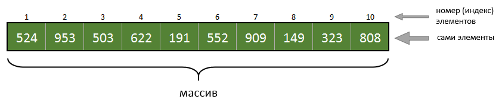
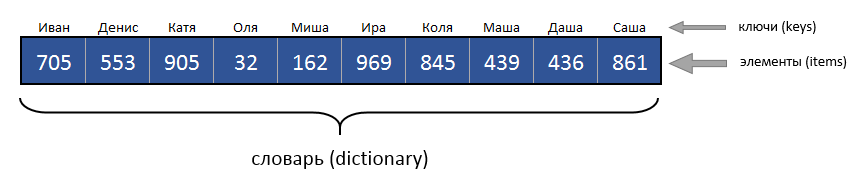
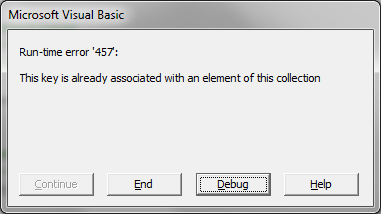
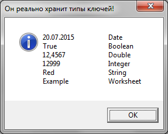
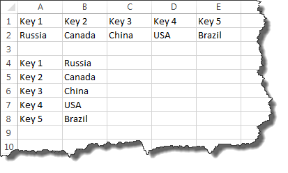

3. Свойства и методы объекта Dictionary
4.1. Типы данных ключа и элемента
4.4. Неявное добавление ключа в Dictionary
5.1. Удаление конкретного элемента
6.1. Последовательность хранения
6.2. Добавление элементов с ключами разных типов
6.3. Уникальность строковых ключей
6.4. Генерация уникальных ключей
8.1. Извлечение элемента по ключу
8.2. Извлечение элемента по номеру его индекса
8.3. Извлечение ключа по номеру его индекса
9.1. For each по массивам Keys и Items
9.2. For по массивам Keys и Items
9.4. Выгрузка словаря в диапазон ячеек
9.5. Операции с ключами/элементами при помощи формул рабочего листа
Если вы программируете на VBA/VBS, то рано или поздно вынуждены будете познакомиться с объектом Dictionary. Если в двух словах, то Dictionary - это продвинутый массив. Как вы знаете, массив - это упорядоченный набор неких (обычно однородных) элементов. Вот типичный массив:

Элементы пронумерованы и доступны по номеру индекса. Индекс всегда числовой.
А вот, что из себя представляет Dictionary (словарь):

Как видите, каждому элементу поставлен в соответствие не просто числовой индекс, а уникальный ключ, который в данном случае представляет из себя текстовую строку (имена). Двух одинаковых ключей в словаре быть не может, но могут быть одинаковые элементы (хоть все одинаковые). Таким образом словарь - это обычно некий список, снабжённый ключом, при помощи которого вы хотите извлекать полезную информацию (элементы). В указанном примере мы имеем, допустим, имена детей в качестве ключа, а в качестве элементов, поставленных в соответствие ключу, скажем, количество карманных денег у ребёнка.
С другой стороны нечто подобное можно же сделать, используя массив. Давайте объявим двумерный массив:
|
Dim arrMoney(1 to 2, 1 to 10)
arrMoney(1,1) = "Иван" arrMoney(2,1) = 705 arrMoney(1,2) = "Денис" arrMoney(2,2) = 553 ' и так далее... |
Должно быть у словаря есть какие-то преимущества перед таким использованием массивов? И это действительно так!
Давайте пока просто перечислим важнейшие преимущества:
- Словарь контролирует уникальность ключей. Два одинаковых ключа не могут быть добавлены в словарь. Это важное свойство, так как программисту очень часто требуется обеспечить или проконтролировать уникальность каких-либо наборов значений, и в этом может с успехом быть использован Dictionary;
- Словарь очень эффективно (при помощи встроенного алгоритма бинарного поиска) осуществляет извлечение элементов по известному ключу. В десятки раз быстрее, чем обычный перебор;
- У словаря есть встроенный метод (Exists), при помощи которого можно понять, добавлен ли некий ключ в коллекцию;
- Словарь позволяет добавлять новые элементы и удалять любые элементы, что, работая с массивами, сделать гораздо сложнее;
- Словарь может вернуть все ключи и все элементы в виде отдельных одномерных массивов.
Существует несколько способов создать объект типа Dictionary. Ознакомимся с ними:
Sub Creation()
' ВАРИАНТ 1 - раннее связывание
' ------------------------------------------------------
' декларируем объектную переменную
Dim dicTemp1 As Dictionary ' нужно, если есть опция Option Explicit
' либо можно так: Dim dicTemp1
' либо так: Dim dicTemp1 as Object
' создаём объект и присваиваем ссылку на него переменной
Set dicTemp1 = New Dictionary
' проверяем что объект работает, выводя количество элементов
' сейчас их там, конечно же, нет ни одного
MsgBox dicTemp1.Count
' ВАРИАНТ 2 - раннее связывание
' ------------------------------------------------------
' декларируем и сразу создаём объект
Dim dicTemp2 As New Dictionary
' проверяем что объект работает
MsgBox dicTemp2.Count
' ВАРИАНТ 3 - раннее связывание (без переменной)
' ------------------------------------------------------
With New Dictionary
MsgBox .Count
End With
' ВАРИАНТ 4 - позднее связывание
' ------------------------------------------------------
Dim dicTemp4 ' нужно, если есть опция Option Explicit
Set dicTemp4 = CreateObject("Scripting.Dictionary")
MsgBox dicTemp4.Count
' ВАРИАНТ 5 - позднее связывание (без переменной)
' ------------------------------------------------------
With CreateObject("Scripting.Dictionary")
MsgBox .Count
End With
End Sub
Считается, что методы, использующие позднее связывание надёжнее в плане обеспечения работоспособности программы на разных компьютерах, так как не зависят от настроек Tools - References... редактора VBA.

Однако, учитывая, что библиотека Microsoft Scripting Runtime присутствует везде, начиная с Windows 2000, я думаю, что вы без какого-либо ущерба можете использовать методы раннего связывания. Раннее связывание хорошо тем, что оно несколько быстрее работает, а также во время разработки вы можете пользоваться функцией завершения кода (когда среда программирования вам подсказывает имеющиеся у объекта свойства и методы). Выбор за вами.
3. СВОЙСТВА И МЕТОДЫ ОБЪЕКТА DICTIONARY
|
Тип |
Идентификатор |
Описание |
|
Свойство |
Count |
dicObject.Count |
|
Свойство |
Item |
dicObject.Item(key)[ = newitem] |
|
Свойство |
Key |
dicObject.Key(key) = newkey |
|
Свойство |
CompareMode |
dicObject.CompareMode[ = compare] |
|
Метод |
Add |
dicObject.Add (key, item) |
|
Метод |
Exists |
dicObject.Exists(key) |
|
Метод |
Items |
dicObject.Items( ) |
|
Метод |
Keys |
dicObject.Keys( ) |
|
Метод |
Remove |
dicObject.Remove(key) |
|
Метод |
RemoveAll |
dicObject.RemoveAll( ) |
4.1. Типы данных ключа и элемента
Dictionary наполняется по одному элементу. Не существует способов наполнить словарь массово. Чтобы добавить в словарь новый элемент вы должны иметь уникальный ключ и сам элемент, который под этим ключом будет храниться в словаре.
В качестве типа данных для элемента может быть использовано практически всё что угодно: числа, логический тип, строки (в том числе пустые), дата-время, массивы, любые объекты (листы, диапазоны, коллекции, другие словари, пустой указатель Nothing).
В качестве типа данных для ключа могут быть использованы: числа, строки, дата-время, объекты, но не массивы.
UDT (User Defined Type) не может напрямую использоваться в качестве ключа и/или элемента, но данное ограничение можно обойти, объявив аналог UDT, создав класс и определив в нём свойства аналогичные имеющимся в UDT. А поскольку класс - это объектный тип, то его уже можно использовать для ключей и элементов.
На листе Example, прилагаемого к статье файла, есть таблица с TOP30 стран по площади их территории. Для области данных этой таблицы объявлен именованный диапазон SquareByCountry. Пример ниже добавляет все строки указанногот ИД в Dictionary по принципу страна (key) - площадь (item):
|
Sub HowToAddElement()
Dim dicCountry 'Объявляем переменную для словаря Dim row As Integer Dim key As String, item As Double ' переменные для ключа и элемента словаря Set dicCountry = CreateObject("Scripting.Dictionary") ' создаём словарь
With Sheets("Example").Range("SquareByCountry") ' работаем с именованным диапазоном For row = 1 To .Rows.Count ' перебираем строки ИД key = CStr(.Cells(row, 1).Value) ' получаем ключ из первого столбца текущей строки ИД item = CDbl(.Cells(row, 2).Value) ' получаем элемент из второго столбца текущей строки ИД dicCountry.Add key, item ' и добавляем новый элемент в коллекцию Next End With
End Sub |
Как видите, для добавления элемента (item) мы в 12-й строке кода использовали метод Add объекта dicCountry. Если в нашей таблице будет задвоена страна, то при попытке добавить в словарь элемента с ключом, который в словаре уже есть, будет сгенерировано исключение:

|
' другой вариант для 12-й строки предыдущего примера кода dicCountry.Item(key) = item ' и добавляем новый элемент в коллекцию |
Используя свойство Item, также можно добавлять пары ключ-элемент, однако, при попытке добавить дублирующий ключ исключения сгенерировано НЕ БУДЕТ, а элемент будет заменён на новый (с потерей старого). Это очень полезно - иметь возможность выбирать способы наполнения словаря, отличающиеся реакцией на задвоение ключей.
4.4. Неявное добавление ключа в Dictionary
И ещё один неожиданный и я бы сказал экзотический способ пополнения словаря. Если упомянуть свойство Item поПРАВУЮ сторону оператора присваивания, то он оказывается добавит в словарь key с пустым item, если данного key не существует в коллекции. Если же такой key уже существует, то никаких действий предпринято не будет.
Sub ImplicitKeyAddition()
Dim dicCountry
Dim row As Integer, key As String
Dim varTemp ' объявляем любую переменную
Set dicCountry = CreateObject("Scripting.Dictionary") ' создаём словарь
With Sheets("Example").Range("SquareByCountry")
For row = 1 To .Rows.Count
key = CStr(.Cells(row, 1).Value)
varTemp = dicCountry.Item(key) ' добавляем КЛЮЧ в словарь (элемент будет пустой)
Next
End With
End Sub
Ещё раз хочу обратить ваше внимание, что элемент (item) при таком пополнении коллекции будет пустым (Empty). Это можно использовать, если вам нет необходимости что-то хранить в элементах в качестве полезной нагрузки (например, когда вы просто строите список уникальных значений, встречающихся в столбце таблицы).
Если вы читаете словарь через Item (а это, собственно, самый логичный и распространенный метод), и при этом хотите избежать добавления пустых ключей в словарь, используйте предварительно метод Exists, что контроля наличия такого ключа в коллекции.
|
key = CStr(.Cells(row, 1).Value) ' значение Item(key) считывается в varTemp только в случае, если словарь содержит этот key, ' чтобы избежать добавления пустых элементов, так как часто это может быть нежелательно if dicCountry.Exists(key) then varTemp = dicCountry.Item(key) |
Есть 2 варианта удаления элементов из словаря:
5.1. Удаление конкретного элемента
|
' удаляем элемент с ключом "США" из словаря dicCountry.Remove "США" |
|
' очистка словаря от всех элементов dicCountry.RemoveAll |
Полагаю, комментировать тут нечего.
6.1. Последовательность хранения
Следует понимать, что элементы в словаре хранятся в той последовательности, в которой они добавлялись в словарь. Менять эту последовательность можно только путём полной перестройки словаря (хотя не совсем понятно для чего это может понадобиться).
6.2. Добавление элементов с ключами разных типов
Продемонстрируем, добавление элементов с ключами разных типов в словарь:
|
Sub ShowDifferentKeys()
On Error Resume Next
Dim dicTemp As New Dictionary Dim strShow As String, key As Variant
dicTemp.Add Date, "Date type" ' добавляем ключ с типом дата
dicTemp.Add True, "Boolean type" ' добавляем ключ с логическим типом
dicTemp.Add CDbl(12.4567), "Double type" ' добавляем ключ с типом Double
dicTemp.Add CInt(12999), "Integer type" ' добавляем ключ с типом Integer
dicTemp.Add "Red", "String type" ' добавляем строковый ключ
dicTemp.Add ActiveSheet, "Worksheet object" ' добавляем ключ в виже Worksheet объекта
For Each key In dicTemp.Keys ' перебираем ключи словаря (тут немного забегаю вперёд) Err.Clear ' очищаю ошибку ' Для каждого элемента словаря формирую строку ключ - тип ключа ' Тип ключа выясняем при помощи функции TypeName strShow = strShow & CStr(key) & vbTab & vbTab & TypeName(key) & vbCr ' Поскольку у нас один из ключей имеет объектный тип, то CStr(key) выдаст ошибку ' которую мы перехватим и CStr(key) заменим на key.Name If Err Then strShow = strShow & key.Name & vbTab & vbTab & TypeName(key) & vbCr Next
' Выведем на экран результат MsgBox strShow, vbInformation, "Он реально хранит типы ключей!"
End Sub |
Вот, что мы получим, выполнив представленный код:

6.3. Уникальность строковых ключей
При помощи свойства CompareMode можно управлять тем, как Dictionary будет реагировать на одинаковые текстовые ключи, набранные в разном регистре. При значении CompareMode равным константе TextCompare (1) разный регистр игнорируется и ключи считаются идентичными, а при константе BinaryCompare (0) такие ключи считаются разными. Менять CompareMode можно только, когда словарь пуст (либо только создан, либо только что очищен).
|
Sub ShowCompareMode() On Error Resume Next
With New Dictionary .CompareMode = TextCompare ' текстовый режим - игнорирует регистр
.Add "Россия", 17098 .Add "РоссиЯ", 17098 ' тут будет сгенерировано исключение
MsgBox Join(.Keys, vbLf), , "Россия и РоссиЯ" .RemoveAll 'очищаем словарь, иначе изменение CompareMode вызовет ошибку
.CompareMode = BinaryCompare ' двоичный режим - различает регистр
.Add "США", 9519 .Add "Сша", 9519 ' будут добавлены оба элемента
MsgBox Join(.Keys, vbLf), , "США и Сша"
End With End Sub |
6.4. Генерация уникальных ключей
Иногда требуется сохранить в Dictionary все элементы, а какие при этом будут ключи нам всё равно - лишь бы они были уникальные, так как в противном случае мы можем потерять некоторые элементы (items). В таких случаях очень удобно использовать свойство Count в качестве генератора уникального значения ключа, так как Count гарантированно увеличивается на единицу всякий раз, когда добавляется элемент.
|
Sub ShowUniqKeys() Dim Element With CreateObject("Scripting.Dictionary") For Each Element In Array("Один", "Два", "Три", "Четыре", "Пять") ' Используем Count в качестве значения ключа ' таким образом ключи будут 0,1,2,3,4 .item(.Count) = Element Next MsgBox Join(.Keys, vbLf) End With End Sub |
7.1. Типы элементов
Продемонстрируем добавление в словарь элементов разных типов:
|
Sub ShowDifferentItems()
Dim dicTemp As New Dictionary Dim strShow As String, Item As Variant
With dicTemp .Add .Count, Date ' добавляем элемент с типом дата
.Add .Count, True ' добавляем элемент с логическим типом
.Add .Count, CDbl(12.4567) ' добавляем элемент с типом Double
.Add .Count, CInt(12999) ' добавляем элемент с типом Integer
.Add .Count, "Red" ' добавляем строковый элемент
.Add .Count, ActiveSheet ' добавляем элемент в виде Worksheet объекта
.Add .Count, Array(11, 22, 33) ' добавляем элемент типа массив
For Each Item In .Items ' перебираем элементы словаря (тут немного забегаю вперёд) Err.Clear ' очищаю ошибку ' Для каждого элемента словаря формирую строку c типом элемента ' Тип элемента выясняем при помощи функции TypeName strShow = strShow & TypeName(Item) & vbCr Next End With
' Выведем на экран результат MsgBox strShow, vbInformation, "Он реально хранит типы элементов!"
End Sub |
Как я уже упоминал, напрямую переменные типа UDT нельзя сохранять в качестве элементов Dictionary. Чтобы это обойти нужно вместо UDT создать модуль класса, полностью соответствующий структуре необходимого вам UDT. Например, я создал модуль класса с названием MyRGB и определил его так:
|
Public Red As Byte Public Green As Byte Public Blue As Byte |
далее становится возможным следующее:
|
Sub UDT_through_Class()
Dim objRGB As MyRGB ' объявляем переменную с типом нашего класса
Set objRGB = New MyRGB ' создаём наш объект
' Присваиваем какие-то значения objRGB.Red = 100 objRGB.Green = 150 objRGB.Blue = 200
With New Dictionary ' создаём словарь .Add "test", objRGB ' добавляем в качестве элемента наш объект ' Теперь мы можем обращаться к отдельным свойствам данного элемента словаря ' в частности, мы тут прочли красную ("Red") компоненту структуры MsgBox "К примеру, красная компонента равна " & .Item("test").Red End With
End Sub |
8.1. Извлечение элемента по ключу
Этот способ мы уже обсуждали, но для полноты картины повторимся.
|
Sub Get_Item_By_Key() With New Dictionary
.Add "Россия", 17098 ' добавляем элемент
MsgBox .Item("Россия") ' и извлекаем элемент
End With End Sub |
Мы используем свойство Item с указанием ключа. Если ключа не существует, то будет возвращено значение Empty, а в словарь добавлен данный ключ со значением Empty в качестве элемента. Никаких исключений не генерируется. Если хотите избежать добавления ключа в коллекцию, используйте предварительно метод Exists для проверки его наличия.
8.2. Извлечение элемента по номеру его индекса
Для извлечения конкретного элемента по его индексу необходимо использовать конструкцию Items()(i), где i - индекс элемента, начинающийся с нуля. Это довольно неожиданный синтаксис, я не припомню, чтобы он применялся где-то ещё кроме Dictionary. Согласно таблице, приведенной выше, Items - свойство, содержащее одномерный массив всех элементов словаря. Также есть соответствующий массив Keys для всех ключей словаря.
|
Sub Get_Item_By_Index()
Dim dicTemp As New Dictionary ' объявляем и сразу создаём словарь Dim varCountry As Variant ' вспомогательная переменная
With dicTemp ' работаем со словарём
' Организуем цикл по массиву из 5 элементов For Each varCountry In Array("Russia", "Canada", "China", "USA", "Brazil") ' наполняем словарь парами вида "Key 1" - "Russia", "Key 2" - "Canada" .Item("Key " & CStr(.Count + 1)) = varCountry ' используем способ из 4.3. Next
' Извлекаем элементы по их индексу! Обратите внимание на синтаксис! ' наиболее неожиданно тут то, что после Items надо использовать пустые скобки MsgBox .Items()(0) ' вернёт Russia, так как нумерация начинается с нуля MsgBox .Items()(3) ' вернёт USA
MsgBox .Items()(.Count - 1) ' классика - последний элемент! MsgBox .Items()(UBound(.Keys)) ' немного экзотики - тоже последний элемент :)
End With End Sub |
8.3. Извлечение ключа по номеру его индекса
Безусловно то же самое справедливо и для извлечения ключей.
|
MsgBox .Keys()(0) ' вернёт "Key 1" для предыдущего примера
MsgBox .Keys()(.Count - 1) ' вернёт "Key 5" |
9.1. For each по массивам Keys и Items
|
Sub Loop_1()
Dim dicTemp As New Dictionary Dim varCountry As Variant Dim varKey As Variant, varItem As Variant Dim strShow As String
With dicTemp
For Each varCountry In Array("Russia", "Canada", "China", "USA", "Brazil") .Item("Key " & CStr(.Count + 1)) = varCountry Next
For Each varKey In .Keys ' организуем цикл по элементам масива Keys strShow = strShow & .Item(varKey) & vbLf Next
MsgBox strShow, vbInformation, "Цикл по Keys"
strShow = vbNullString
For Each varItem In .Items ' организуем цикл по элементам масива Items strShow = strShow & varItem & vbLf Next
MsgBox strShow, vbInformation, "Цикл по Items"
End With End Sub |
9.2. For по массивам Keys и Items
|
Sub Loop_2()
Dim dicTemp As New Dictionary Dim varCountry As Variant Dim strShow As String, i As Integer
With dicTemp
For Each varCountry In Array("Russia", "Canada", "China", "USA", "Brazil") .Item("Key " & CStr(.Count + 1)) = varCountry Next
For i = 0 To .Count - 1 strShow = strShow & .Items()(i) & vbLf Next
MsgBox strShow, vbInformation, "Цикл по Items"
strShow = vbNullString
For i = 0 To .Count - 1 strShow = strShow & .Keys()(i) & vbLf Next
MsgBox strShow, vbInformation, "Цикл по Keys"
End With End Sub |
Для фильтрации словаря по ключам или элементам крайне удобно использовать VBA функцию Filter. Вот как это может выглядеть:
|
Sub Filter_1()
Dim dicTemp As New Dictionary Dim varCountry As Variant Dim varItem As Variant
With dicTemp
For Each varCountry In Array("Russia", "Canada", "China", "USA", "Brazil") .Item("Key " & CStr(.Count + 1)) = varCountry Next
' Используем VBA функцию Filter! For Each varItem In Filter(.Items, "r", , vbTextCompare) MsgBox varItem ' будет отфильтрованы Russia и Brazil Next
End With End Sub |
9.4. Выгрузка словаря в диапазон ячеек
|
Sub Fill_Range()
Dim dicTemp As New Dictionary Dim varCountry As Variant Dim varItem As Variant
With dicTemp
For Each varCountry In Array("Russia", "Canada", "China", "USA", "Brazil") .Item("Key " & CStr(.Count + 1)) = varCountry Next
' вытягиваем элементы по строке Cells(1, 1).Resize(, .Count) = .Keys Cells(2, 1).Resize(, .Count) = .Items
' вытягиваем элементы по столбцу Cells(4, 1).Resize(.Count) = Application.Transpose(.Keys) Cells(4, 2).Resize(.Count) = Application.Transpose(.Items)
End With End Sub |
Результат:

9.5. Операции с ключами/элементами при помощи формул рабочего листа
Если ключи/элементы у вас в виде числовых значений, то к ним легко можно применять стандартные функции рабочего листа. Например, ниже я определяю страну с наибольшей территорией и вывожу её название. Числовую территорию в данном случае желательно иметь в виде ключа, так как зная ключ, вывести элемент легко, а вот, зная элемент, найти по нему ключ, гораздо сложнее (потребуется перебор всего словаря).
|
Sub Operations_with_Keys()
Dim dicTemp As New Dictionary Dim arrItems, arrKeys Dim i As Integer
With dicTemp
' определяем массивы для ключей и элементов arrKeys = Array(17098, 9976, 9598, 9519, 8511) arrItems = Array("Russia", "Canada", "China", "USA", "Brazil")
' добавляем массивы в словарь For i = 0 To UBound(arrKeys) .Add arrKeys(i), arrItems(i) Next
' находим максимальное значение ключа, а по ключу извлекаем элемент (название страны) MsgBox .Item(Application.Max(.Keys)) & " has the largest territory."
End With End Sub |
К вашим услугам и другие функции, такие как: Min(), Large(), Small() и т.д.
Я надеюсь, что данная статья помогла вам хорошенько разобрать с объектом Dictionary. В моих ближайших планах рассказать, как при помощи словаря строить произвольные иерархические структуры. Так же стоит упомянуть, что в VBA есть такой встроенный объект Collection. Однако, по своим функциональным возможностям он достаточно уныл и вчистую проигрывает Dictionary, поэтому я не хочу тратить на него силы и время. Единственное его преимущество это то, что он часть MS Office, а словарь - часть MS Windows, поэтому первый работает в MS Excel for Mac, а второй - нет. Но пока (да и вообще) в нашей стране это обстоятельство можно с лёгкостью игнорировать.
Массу конкретного материала по объекту Dictionary я подчерпнул из этой замечательной (огромной!) статьи некоего, по всей видимости испанского, автора, имени которого на сайте нет. Очень рекомендую. На сайте также даётся огромное количество примеров работы с объектной моделью Outlook!
Читайте также:
·
· 1
· 2
· 3
· 4
· 5
Категория: Макросы и программы VBA | Добавил: dsb75 (20.07.2015) | Автор: Батьянов Денис E W
Просмотров: 2225 | Комментарии: 47 | Рейтинг: 5.0/3